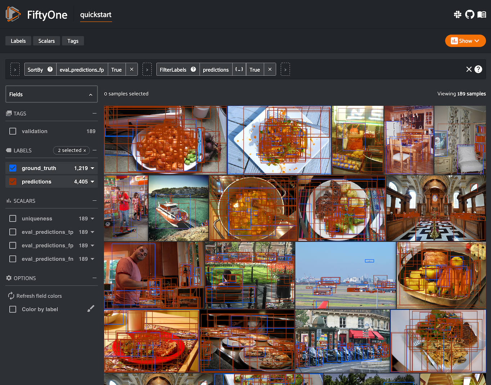

Evaluating Models ¶¶
FiftyOne provides a variety of builtin methods for evaluating your model predictions, including regressions, classifications, detections, polygons, instance and semantic segmentations, on both image and video datasets.
When you evaluate a model in FiftyOne, you get access to the standard aggregate metrics such as classification reports, confusion matrices, and PR curves for your model. In addition, FiftyOne can also record fine-grained statistics like accuracy and false positive counts at the sample-level, which you can interactively explore in the App to diagnose the strengths and weaknesses of your models on individual data samples.
Sample-level analysis often leads to critical insights that will help you improve your datasets and models. For example, viewing the samples with the most false positive predictions can reveal errors in your annotation schema. Or, viewing the cluster of samples with the lowest accuracy can reveal gaps in your training dataset that you need to address in order to improve your model’s performance. A key goal of FiftyOne is to help you uncover these insights on your data!
Note
Check out the tutorials page for in-depth walkthroughs of evaluating various types of models with FiftyOne.
Overview ¶¶
FiftyOne’s evaluation methods are conveniently exposed as methods on all
Dataset and DatasetView objects, which means that you can evaluate entire
datasets or specific views into them via the same syntax.
Let’s illustrate the basic workflow by loading the
quickstart dataset and analyzing the object
detections in its predictions field using the
evaluate_detections()
method:
import fiftyone as fo
import fiftyone.zoo as foz
dataset = foz.load_zoo_dataset("quickstart")
# Evaluate the objects in the `predictions` field with respect to the
# objects in the `ground_truth` field
results = dataset.evaluate_detections(
"predictions",
gt_field="ground_truth",
eval_key="eval",
)
session = fo.launch_app(dataset)
Model Evaluation panel NEW ¶¶
When you load a dataset in the App that contains one or more evaluations, you can open the Model Evaluation panel to visualize and interactively explore the evaluation results in the App:

Per-class metrics ¶¶
You can also retrieve and interact with evaluation results via the SDK.
Running an evaluation returns an instance of a task-specific subclass of
EvaluationResults that provides a handful of methods for generating aggregate
statistics about your dataset.
# Get the 10 most common classes in the dataset
counts = dataset.count_values("ground_truth.detections.label")
classes = sorted(counts, key=counts.get, reverse=True)[:10]
# Print a classification report for the top-10 classes
results.print_report(classes=classes)
precision recall f1-score support
person 0.45 0.74 0.56 783
kite 0.55 0.72 0.62 156
car 0.12 0.54 0.20 61
bird 0.63 0.67 0.65 126
carrot 0.06 0.49 0.11 47
boat 0.05 0.24 0.08 37
surfboard 0.10 0.43 0.17 30
traffic light 0.22 0.54 0.31 24
airplane 0.29 0.67 0.40 24
giraffe 0.26 0.65 0.37 23
micro avg 0.32 0.68 0.44 1311
macro avg 0.27 0.57 0.35 1311
weighted avg 0.42 0.68 0.51 1311
Note
For details on micro, macro, and weighted averaging, see the sklearn.metrics documentation.
Per-sample metrics ¶¶
In addition to standard aggregate metrics, when you pass an eval_key
parameter to the evaluation routine, FiftyOne will populate helpful
task-specific information about your model’s predictions on each sample, such
as false negative/positive counts and per-sample accuracies.
Continuing with our example, let’s use dataset views and the FiftyOne App to leverage these sample metrics to investigate the samples with the most false positive predictions in the dataset:
import fiftyone as fo
from fiftyone import ViewField as F
# Create a view that has samples with the most false positives first, and
# only includes false positive boxes in the `predictions` field
view = (
dataset
.sort_by("eval_fp", reverse=True)
.filter_labels("predictions", F("eval") == "fp")
)
# Visualize results in the App
session = fo.launch_app(view=view)

Notice anything wrong? The sample with the most false positives is a plate of carrots where the entire plate has been boxed as a single example in the ground truth while the model is generating predictions for individual carrots!
If you’re familiar with COCO format
(which is recognized by
evaluate_detections()
by default), you’ll notice that the issue here is that the iscrowd
attribute of this ground truth annotation has been incorrectly set to 0.
Resolving mistakes like these will provide a much more accurate picture of the
real performance of a model.
Confusion matrices ¶¶
Note
The easiest way to work with confusion matrices in FiftyOne is via the Model Evaluation panel!
When you use evaluation methods such as
evaluate_detections()
that support confusion matrices, you can use the
plot_confusion_matrix()
method to render responsive plots that can be attached to App instances to
interactively explore specific cases of your model’s performance:
# Plot confusion matrix
plot = results.plot_confusion_matrix(classes=classes)
plot.show()
# Connect to session
session.plots.attach(plot)

In this setup, you can click on individual cells of the confusion matrix to select the corresponding ground truth and/or predicted objects in the App. For example, if you click on a diagonal cell of the confusion matrix, you will see the true positive examples of that class in the App.
Likewise, whenever you modify the Session’s view, either in the App or by
programmatically setting
session.view, the confusion matrix
is automatically updated to show the cell counts for only those objects that
are included in the current view.
Managing evaluations ¶¶
When you run an evaluation with an eval_key argument, the evaluation is
recorded on the dataset and you can retrieve information about it later, rename
it, delete it (along with any modifications to your dataset that were performed
by it), and retrieve the view that you evaluated
on using the following methods on your dataset:
The example below demonstrates the basic interface:
# List evaluations you've run on a dataset
dataset.list_evaluations()
# ['eval']
# Print information about an evaluation
print(dataset.get_evaluation_info("eval"))
# Load existing evaluation results and use them
results = dataset.load_evaluation_results("eval")
results.print_report()
# Rename the evaluation
# This will automatically rename any evaluation fields on your dataset
dataset.rename_evaluation("eval", "still_eval")
# Delete the evaluation
# This will remove any evaluation data that was populated on your dataset
dataset.delete_evaluation("still_eval")
The sections below discuss evaluating various types of predictions in more detail.
Regressions ¶¶
You can use the
evaluate_regressions()
method to evaluate the predictions of a regression model stored in a
Regression field of your dataset.
Invoking
evaluate_regressions()
returns a RegressionResults instance that provides a variety of methods for
evaluating your model.
In addition, when you specify an eval_key parameter, helpful fields will be
populated on each sample that you can leverage via the
FiftyOne App to interactively explore the strengths and
weaknesses of your model on individual samples.
Simple evaluation (default) ¶¶
By default,
evaluate_regressions()
will evaluate each prediction by directly comparing its value to the
associated ground truth value.
You can explicitly request that simple evaluation be used by setting the
method parameter to "simple".
When you specify an eval_key parameter, a float eval_key field will be
populated on each sample that records the error of that sample’s prediction
with respect to its ground truth value. By default, the squared error will be
computed, but you can customize this via the optional metric argument to
evaluate_regressions(),
which can take any value supported by
SimpleEvaluationConfig.
The example below demonstrates simple evaluation on the quickstart dataset with some fake regression data added to it to demonstrate the workflow:
import random
import numpy as np
import fiftyone as fo
import fiftyone.zoo as foz
from fiftyone import ViewField as F
dataset = foz.load_zoo_dataset("quickstart").select_fields().clone()
# Populate some fake regression + weather data
for idx, sample in enumerate(dataset, 1):
ytrue = random.random() * idx
ypred = ytrue + np.random.randn() * np.sqrt(ytrue)
confidence = random.random()
sample["ground_truth"] = fo.Regression(value=ytrue)
sample["predictions"] = fo.Regression(value=ypred, confidence=confidence)
sample["weather"] = random.choice(["sunny", "cloudy", "rainy"])
sample.save()
print(dataset)
# Evaluate the predictions in the `predictions` field with respect to the
# values in the `ground_truth` field
results = dataset.evaluate_regressions(
"predictions",
gt_field="ground_truth",
eval_key="eval",
)
# Print some standard regression evaluation metrics
results.print_metrics()
# Plot a scatterplot of the results colored by `weather` and scaled by
# `confidence`
plot = results.plot_results(labels="weather", sizes="predictions.confidence")
plot.show()
# Launch the App to explore
session = fo.launch_app(dataset)
# Show the samples with the smallest regression error
session.view = dataset.sort_by("eval")
# Show the samples with the largest regression error
session.view = dataset.sort_by("eval", reverse=True)
mean squared error 59.69
root mean squared error 7.73
mean absolute error 5.48
median absolute error 3.57
r2 score 0.97
explained variance score 0.97
max error 31.77
support 200
Note
Did you know? You can attach regression plots to the App and interactively explore them by selecting scatter points and/or modifying your view in the App.
Classifications ¶¶
You can use the
evaluate_classifications()
method to evaluate the predictions of a classifier stored in a
Classification field of your dataset.
By default, the classifications will be treated as a generic multiclass
classification task, but you can specify other evaluation strategies such as
top-k accuracy or binary evaluation via the method parameter.
Invoking
evaluate_classifications()
returns a ClassificationResults instance that provides a variety of methods
for generating various aggregate evaluation reports about your model.
In addition, when you specify an eval_key parameter, a number of helpful
fields will be populated on each sample that you can leverage via the
FiftyOne App to interactively explore the strengths and
weaknesses of your model on individual samples.
Simple evaluation (default) ¶¶
By default,
evaluate_classifications()
will treat your classifications as generic multiclass predictions, and it will
evaluate each prediction by directly comparing its label to the associated
ground truth prediction.
You can explicitly request that simple evaluation be used by setting the
method parameter to "simple".
When you specify an eval_key parameter, a boolean eval_key field will
be populated on each sample that records whether that sample’s prediction is
correct.
The example below demonstrates simple evaluation on the CIFAR-10 dataset with some fake predictions added to it to demonstrate the workflow:
import random
import fiftyone as fo
import fiftyone.zoo as foz
from fiftyone import ViewField as F
dataset = foz.load_zoo_dataset(
"cifar10",
split="test",
max_samples=1000,
shuffle=True,
)
#
# Create some test predictions by copying the ground truth labels into a
# new `predictions` field with 10% of the labels perturbed at random
#
classes = dataset.distinct("ground_truth.label")
def jitter(val):
if random.random() < 0.10:
return random.choice(classes)
return val
predictions = [\
fo.Classification(label=jitter(gt.label), confidence=random.random())\
for gt in dataset.values("ground_truth")\
]
dataset.set_values("predictions", predictions)
print(dataset)
# Evaluate the predictions in the `predictions` field with respect to the
# labels in the `ground_truth` field
results = dataset.evaluate_classifications(
"predictions",
gt_field="ground_truth",
eval_key="eval_simple",
)
# Print a classification report
results.print_report()
# Plot a confusion matrix
plot = results.plot_confusion_matrix()
plot.show()
# Launch the App to explore
session = fo.launch_app(dataset)
# View only the incorrect predictions in the App
session.view = dataset.match(F("eval_simple") == False)
precision recall f1-score support
airplane 0.91 0.90 0.91 118
automobile 0.93 0.90 0.91 101
bird 0.93 0.87 0.90 103
cat 0.92 0.91 0.92 94
deer 0.88 0.92 0.90 116
dog 0.85 0.84 0.84 86
frog 0.85 0.92 0.88 84
horse 0.88 0.91 0.89 96
ship 0.93 0.95 0.94 97
truck 0.92 0.89 0.90 105
accuracy 0.90 1000
macro avg 0.90 0.90 0.90 1000
weighted avg 0.90 0.90 0.90 1000

Note
The easiest way to analyze models in FiftyOne is via the Model Evaluation panel!
Top-k evaluation ¶¶
Set the method parameter of
evaluate_classifications()
to top-k in order to use top-k matching to evaluate your classifications.
Under this strategy, predictions are deemed to be correct if the corresponding
ground truth label is within the top k predictions.
When you specify an eval_key parameter, a boolean eval_key field will
be populated on each sample that records whether that sample’s prediction is
correct.
Note
In order to use top-k evaluation, you must populate the logits field
of your predictions, and you must provide the list of corresponding class
labels via the classes parameter of
evaluate_classifications().
Did you know? Many models from the Model Zoo provide support for storing logits for their predictions!
The example below demonstrates top-k evaluation on a small ImageNet sample with predictions from a pre-trained model from the Model Zoo:
import fiftyone as fo
import fiftyone.zoo as foz
from fiftyone import ViewField as F
dataset = foz.load_zoo_dataset(
"imagenet-sample", dataset_name="top-k-eval-demo"
)
# We need the list of class labels corresponding to the logits
logits_classes = dataset.default_classes
# Add predictions (with logits) to 25 random samples
predictions_view = dataset.take(25, seed=51)
model = foz.load_zoo_model("resnet50-imagenet-torch")
predictions_view.apply_model(model, "predictions", store_logits=True)
print(predictions_view)
# Evaluate the predictions in the `predictions` field with respect to the
# labels in the `ground_truth` field using top-5 accuracy
results = predictions_view.evaluate_classifications(
"predictions",
gt_field="ground_truth",
eval_key="eval_top_k",
method="top-k",
classes=logits_classes,
k=5,
)
# Get the 10 most common classes in the view
counts = predictions_view.count_values("ground_truth.label")
classes = sorted(counts, key=counts.get, reverse=True)[:10]
# Print a classification report for the top-10 classes
results.print_report(classes=classes)
# Launch the App to explore
session = fo.launch_app(dataset)
# View only the incorrect predictions for the 10 most common classes
session.view = (
predictions_view
.match(F("ground_truth.label").is_in(classes))
.match(F("eval_top_k") == False)
)

Note
The easiest way to analyze models in FiftyOne is via the Model Evaluation panel!
Binary evaluation ¶¶
If your classifier is binary, set the method parameter of
evaluate_classifications()
to "binary" in order to access binary-specific evaluation information such
as precision-recall curves for your model.
When you specify an eval_key parameter, a string eval_key field will
be populated on each sample that records whether the sample is a true positive,
false positive, true negative, or false negative.
Note
In order to use binary evaluation, you must provide the
(neg_label, pos_label) for your model via the classes parameter of
evaluate_classifications().
The example below demonstrates binary evaluation on the CIFAR-10 dataset with some fake binary predictions added to it to demonstrate the workflow:
import random
import fiftyone as fo
import fiftyone.zoo as foz
# Load a small sample from the ImageNet dataset
dataset = foz.load_zoo_dataset(
"cifar10",
split="test",
max_samples=1000,
shuffle=True,
)
#
# Binarize the ground truth labels to `cat` and `other`, and add
# predictions that are correct proportionally to their confidence
#
classes = ["other", "cat"]
for sample in dataset:
gt_label = "cat" if sample.ground_truth.label == "cat" else "other"
confidence = random.random()
if random.random() > confidence:
pred_label = "cat" if gt_label == "other" else "other"
else:
pred_label = gt_label
sample.ground_truth.label = gt_label
sample["predictions"] = fo.Classification(
label=pred_label, confidence=confidence
)
sample.save()
print(dataset)
# Evaluate the predictions in the `predictions` field with respect to the
# labels in the `ground_truth` field
results = dataset.evaluate_classifications(
"predictions",
gt_field="ground_truth",
eval_key="eval_binary",
method="binary",
classes=classes,
)
# Print a classification report
results.print_report()
# Plot a PR curve
plot = results.plot_pr_curve()
plot.show()
precision recall f1-score support
other 0.90 0.48 0.63 906
cat 0.09 0.50 0.15 94
accuracy 0.48 1000
macro avg 0.50 0.49 0.39 1000
weighted avg 0.83 0.48 0.59 1000

Note
The easiest way to analyze models in FiftyOne is via the Model Evaluation panel!
Detections ¶¶
You can use the
evaluate_detections()
method to evaluate the predictions of an object detection model stored in a
Detections, Polylines, or Keypoints field of your dataset or of a
temporal detection model stored in a TemporalDetections field of your
dataset.
Invoking
evaluate_detections()
returns a DetectionResults instance that provides a variety of methods for
generating various aggregate evaluation reports about your model.
In addition, when you specify an eval_key parameter, a number of helpful
fields will be populated on each sample and its predicted/ground truth
objects that you can leverage via the FiftyOne App to
interactively explore the strengths and weaknesses of your model on individual
samples.
Note
FiftyOne uses the COCO-style evaluation by default, but Open Images-style evaluation is also natively supported.
Supported types ¶¶
The evaluate_detections()
method supports all of the following task types:
The only difference between each task type is in how the IoU between objects is calculated:
-
For object detections, IoUs are computed between each pair of bounding boxes
-
For instance segmentations and polygons, IoUs are computed between the polygonal shapes rather than their rectangular bounding boxes
-
For keypoint tasks, object keypoint similarity is computed for each pair of objects, using the extent of the ground truth keypoints as a proxy for the area of the object’s bounding box, and assuming uniform falloff (κκ)
-
For temporal detections, IoU is computed between the 1D support of two temporal segments
For object detection tasks, the ground truth and predicted objects should be
stored in Detections format.
For instance segmentation tasks, the ground truth and predicted objects should
be stored in Detections format, and each Detection instance should have its
mask attribute populated to
define the extent of the object within its bounding box.
Note
In order to use instance masks for IoU calculations, pass use_masks=True
to evaluate_detections().
For polygon detection tasks, the ground truth and predicted objects should be
stored in Polylines format with their
filled attribute set to
True to indicate that they represent closed polygons (as opposed to
polylines).
Note
If you are evaluating polygons but would rather use bounding boxes rather
than the actual polygonal geometries for IoU calculations, you can pass
use_boxes=True to
evaluate_detections().
For keypoint tasks, each Keypoint instance must contain point arrays of equal
length and semantic ordering.
Note
If a particular point is missing or not visible for a Keypoint instance,
use nan values for its coordinates. See here for more
information about structuring keypoints.
For temporal detection tasks, the ground truth and predicted objects should be
stored in TemporalDetections format.
Evaluation patches views ¶¶
Once you have run
evaluate_detections()
on a dataset, you can use
to_evaluation_patches()
to transform the dataset (or a view into it) into a new view that contains one
sample for each true positive, false positive, and false negative example.
True positive examples will result in samples with both their ground truth and predicted fields populated, while false positive/negative examples will only have one of their corresponding predicted/ground truth fields populated, respectively.
If multiple predictions are matched to a ground truth object (e.g., if the evaluation protocol includes a crowd attribute), then all matched predictions will be stored in the single sample along with the ground truth object.
Evaluation patches views also have top-level type and iou fields
populated based on the evaluation results for that example, as well as a
sample_id field recording the sample ID of the example, and a crowd
field if the evaluation protocol defines a crowd attribute.
Note
Evaluation patches views generate patches for only the contents of the
current view, which may differ from the view on which the eval_key
evaluation was performed. This may exclude some labels that were evaluated
and/or include labels that were not evaluated.
If you would like to see patches for the exact view on which an
evaluation was performed, first call
load_evaluation_view()
to load the view and then convert to patches.
The example below demonstrates loading an evaluation patches view for the results of an evaluation on the quickstart dataset:
import fiftyone as fo
import fiftyone.zoo as foz
dataset = foz.load_zoo_dataset("quickstart")
# Evaluate `predictions` w.r.t. labels in `ground_truth` field
dataset.evaluate_detections(
"predictions", gt_field="ground_truth", eval_key="eval"
)
session = fo.launch_app(dataset)
# Convert to evaluation patches
eval_patches = dataset.to_evaluation_patches("eval")
print(eval_patches)
print(eval_patches.count_values("type"))
# {'fn': 246, 'fp': 4131, 'tp': 986}
# View patches in the App
session.view = eval_patches
Dataset: quickstart
Media type: image
Num patches: 5363
Patch fields:
filepath: fiftyone.core.fields.StringField
tags: fiftyone.core.fields.ListField(fiftyone.core.fields.StringField)
metadata: fiftyone.core.fields.EmbeddedDocumentField(fiftyone.core.metadata.ImageMetadata)
predictions: fiftyone.core.fields.EmbeddedDocumentField(fiftyone.core.labels.Detections)
ground_truth: fiftyone.core.fields.EmbeddedDocumentField(fiftyone.core.labels.Detections)
sample_id: fiftyone.core.fields.StringField
type: fiftyone.core.fields.StringField
iou: fiftyone.core.fields.FloatField
crowd: fiftyone.core.fields.BooleanField
View stages:
1. ToEvaluationPatches(eval_key='eval', config=None)
Note
Did you know? You can convert to evaluation patches view directly from the App!
Evaluation patches views are just like any other dataset view in the sense that:
-
You can append view stages via the App view bar or views API
-
Any modifications to ground truth or predicted label tags that you make via the App’s tagging menu or via API methods like
tag_labels()anduntag_labels()will be reflected on the source dataset -
Any modifications to the predicted or ground truth
Labelelements in the patches view that you make by iterating over the contents of the view or callingset_values()will be reflected on the source dataset -
Calling
save()on an evaluation patches view (typically one that contains additional view stages that filter or modify its contents) will sync anyLabeledits or deletions with the source dataset
However, because evaluation patches views only contain a subset of the contents
of a Sample from the source dataset, there are some differences in behavior
compared to non-patch views:
-
Tagging or untagging patches themselves (as opposed to their labels) will not affect the tags of the underlying
Sample -
Any new fields that you add to an evaluation patches view will not be added to the source dataset
COCO-style evaluation (default spatial) ¶¶
By default,
evaluate_detections()
will use COCO-style evaluation to
analyze predictions when the specified label fields are Detections or
Polylines.
You can also explicitly request that COCO-style evaluation be used by setting
the method parameter to "coco".
Note
FiftyOne’s implementation of COCO-style evaluation matches the reference implementation available via pycocotools.
Overview ¶¶
When running COCO-style evaluation using
evaluate_detections():
-
Predicted and ground truth objects are matched using a specified IoU threshold (default = 0.50). This threshold can be customized via the
iouparameter -
By default, only objects with the same
labelwill be matched. Classwise matching can be disabled via theclasswiseparameter -
Ground truth objects can have an
iscrowdattribute that indicates whether the annotation contains a crowd of objects. Multiple predictions can be matched to crowd ground truth objects. The name of this attribute can be customized by passing the optionaliscrowdattribute ofCOCOEvaluationConfigtoevaluate_detections()
When you specify an eval_key parameter, a number of helpful fields will be
populated on each sample and its predicted/ground truth objects:
- True positive (TP), false positive (FP), and false negative (FN) counts for the each sample are saved in top-level fields of each sample:
TP: sample.<eval_key>_tp
FP: sample.<eval_key>_fp
FN: sample.<eval_key>_fn
- The fields listed below are populated on each individual object instance; these fields tabulate the TP/FP/FN status of the object, the ID of the matching object (if any), and the matching IoU:
TP/FP/FN: object.<eval_key>
ID: object.<eval_key>_id
IoU: object.<eval_key>_iou
Note
See COCOEvaluationConfig for complete descriptions of the optional
keyword arguments that you can pass to
evaluate_detections()
when running COCO-style evaluation.
Example evaluation ¶¶
The example below demonstrates COCO-style detection evaluation on the quickstart dataset:
import fiftyone as fo
import fiftyone.zoo as foz
from fiftyone import ViewField as F
dataset = foz.load_zoo_dataset("quickstart")
print(dataset)
# Evaluate the objects in the `predictions` field with respect to the
# objects in the `ground_truth` field
results = dataset.evaluate_detections(
"predictions",
gt_field="ground_truth",
eval_key="eval",
)
# Get the 10 most common classes in the dataset
counts = dataset.count_values("ground_truth.detections.label")
classes = sorted(counts, key=counts.get, reverse=True)[:10]
# Print a classification report for the top-10 classes
results.print_report(classes=classes)
# Print some statistics about the total TP/FP/FN counts
print("TP: %d" % dataset.sum("eval_tp"))
print("FP: %d" % dataset.sum("eval_fp"))
print("FN: %d" % dataset.sum("eval_fn"))
# Create a view that has samples with the most false positives first, and
# only includes false positive boxes in the `predictions` field
view = (
dataset
.sort_by("eval_fp", reverse=True)
.filter_labels("predictions", F("eval") == "fp")
)
# Visualize results in the App
session = fo.launch_app(view=view)
precision recall f1-score support
person 0.45 0.74 0.56 783
kite 0.55 0.72 0.62 156
car 0.12 0.54 0.20 61
bird 0.63 0.67 0.65 126
carrot 0.06 0.49 0.11 47
boat 0.05 0.24 0.08 37
surfboard 0.10 0.43 0.17 30
airplane 0.29 0.67 0.40 24
traffic light 0.22 0.54 0.31 24
bench 0.10 0.30 0.15 23
micro avg 0.32 0.68 0.43 1311
macro avg 0.26 0.54 0.32 1311
weighted avg 0.42 0.68 0.50 1311

Note
The easiest way to analyze models in FiftyOne is via the Model Evaluation panel!
mAP, mAR and PR curves ¶¶
You can compute mean average precision (mAP), mean average recall (mAR), and
precision-recall (PR) curves for your predictions by passing the
compute_mAP=True flag to
evaluate_detections():
Note
All mAP and mAR calculations are performed according to the COCO evaluation protocol.
import fiftyone as fo
import fiftyone.zoo as foz
dataset = foz.load_zoo_dataset("quickstart")
print(dataset)
# Performs an IoU sweep so that mAP, mAR, and PR curves can be computed
results = dataset.evaluate_detections(
"predictions",
gt_field="ground_truth",
compute_mAP=True,
)
print(results.mAP())
# 0.3957
print(results.mAR())
# 0.5210
plot = results.plot_pr_curves(classes=["person", "kite", "car"])
plot.show()

Confusion matrices ¶¶
You can also easily generate confusion matrices for the results of COCO-style evaluations.
In order for the confusion matrix to capture anything other than false
positive/negative counts, you will likely want to set the
classwise parameter
to False during evaluation so that predicted objects can be matched with
ground truth objects of different classes.
import fiftyone as fo
import fiftyone.zoo as foz
dataset = foz.load_zoo_dataset("quickstart")
# Perform evaluation, allowing objects to be matched between classes
results = dataset.evaluate_detections(
"predictions", gt_field="ground_truth", classwise=False
)
# Generate a confusion matrix for the specified classes
plot = results.plot_confusion_matrix(classes=["car", "truck", "motorcycle"])
plot.show()

Open Images-style evaluation ¶¶
The evaluate_detections()
method also supports
Open Images-style evaluation.
In order to run Open Images-style evaluation, simply set the method
parameter to "open-images".
Note
FiftyOne’s implementation of Open Images-style evaluation matches the reference implementation available via the TF Object Detection API.
Overview ¶¶
Open Images-style evaluation provides additional features not found in COCO-style evaluation that you may find useful when evaluating your custom datasets.
The two primary differences are:
-
Non-exhaustive image labeling: positive and negative sample-level
Classificationsfields can be provided to indicate which object classes were considered when annotating the image. Predicted objects whose classes are not included in the sample-level labels for a sample are ignored. The names of these fields can be specified via thepos_label_fieldandneg_label_fieldparameters -
Class hierarchies: If your dataset includes a class hierarchy, you can configure this evaluation protocol to automatically expand ground truth and/or predicted leaf classes so that all levels of the hierarchy can be correctly evaluated. You can provide a label hierarchy via the
hierarchyparameter. By default, if you provide a hierarchy, then image-level label fields and ground truth detections will be expanded to incorporate parent classes (child classes for negative image-level labels). You can disable this feature by setting theexpand_gt_hierarchyparameter toFalse. Alternatively, you can expand predictions by setting theexpand_pred_hierarchyparameter toTrue
In addition, note that:
-
Like VOC-style evaluation, only one IoU (default = 0.5) is used to calculate mAP. You can customize this value via the
iouparameter -
When dealing with crowd objects, Open Images-style evaluation dictates that if a crowd is matched with multiple predictions, each counts as one true positive when computing mAP
When you specify an eval_key parameter, a number of helpful fields will be
populated on each sample and its predicted/ground truth objects:
- True positive (TP), false positive (FP), and false negative (FN) counts for the each sample are saved in top-level fields of each sample:
TP: sample.<eval_key>_tp
FP: sample.<eval_key>_fp
FN: sample.<eval_key>_fn
- The fields listed below are populated on each individual
Detectioninstance; these fields tabulate the TP/FP/FN status of the object, the ID of the matching object (if any), and the matching IoU:
TP/FP/FN: object.<eval_key>
ID: object.<eval_key>_id
IoU: object.<eval_key>_iou
Note
See OpenImagesEvaluationConfig for complete descriptions of the optional
keyword arguments that you can pass to
evaluate_detections()
when running Open Images-style evaluation.
Example evaluation ¶¶
The example below demonstrates Open Images-style detection evaluation on the quickstart dataset:
import fiftyone as fo
import fiftyone.zoo as foz
from fiftyone import ViewField as F
dataset = foz.load_zoo_dataset("quickstart")
print(dataset)
# Evaluate the objects in the `predictions` field with respect to the
# objects in the `ground_truth` field
results = dataset.evaluate_detections(
"predictions",
gt_field="ground_truth",
method="open-images",
eval_key="eval",
)
# Get the 10 most common classes in the dataset
counts = dataset.count_values("ground_truth.detections.label")
classes = sorted(counts, key=counts.get, reverse=True)[:10]
# Print a classification report for the top-10 classes
results.print_report(classes=classes)
# Print some statistics about the total TP/FP/FN counts
print("TP: %d" % dataset.sum("eval_tp"))
print("FP: %d" % dataset.sum("eval_fp"))
print("FN: %d" % dataset.sum("eval_fn"))
# Create a view that has samples with the most false positives first, and
# only includes false positive boxes in the `predictions` field
view = (
dataset
.sort_by("eval_fp", reverse=True)
.filter_labels("predictions", F("eval") == "fp")
)
# Visualize results in the App
session = fo.launch_app(view=view)
precision recall f1-score support
person 0.25 0.86 0.39 378
kite 0.27 0.75 0.40 75
car 0.18 0.80 0.29 61
bird 0.20 0.51 0.28 51
carrot 0.09 0.74 0.16 47
boat 0.09 0.46 0.16 37
surfboard 0.17 0.73 0.28 30
airplane 0.36 0.83 0.50 24
traffic light 0.32 0.79 0.45 24
giraffe 0.36 0.91 0.52 23
micro avg 0.21 0.79 0.34 750
macro avg 0.23 0.74 0.34 750
weighted avg 0.23 0.79 0.36 750

Note
The easiest way to analyze models in FiftyOne is via the Model Evaluation panel!
mAP and PR curves ¶¶
You can easily compute mean average precision (mAP) and precision-recall (PR)
curves using the results object returned by
evaluate_detections():
Note
FiftyOne’s implementation of Open Images-style evaluation matches the reference implementation available via the TF Object Detection API.
import fiftyone as fo
import fiftyone.zoo as foz
dataset = foz.load_zoo_dataset("quickstart")
print(dataset)
results = dataset.evaluate_detections(
"predictions",
gt_field="ground_truth",
method="open-images",
)
print(results.mAP())
# 0.599
plot = results.plot_pr_curves(classes=["person", "dog", "car"])
plot.show()

Confusion matrices ¶¶
You can also easily generate confusion matrices for the results of Open Images-style evaluations.
In order for the confusion matrix to capture anything other than false
positive/negative counts, you will likely want to set the
classwise
parameter to False during evaluation so that predicted objects can be
matched with ground truth objects of different classes.
import fiftyone as fo
import fiftyone.zoo as foz
dataset = foz.load_zoo_dataset("quickstart")
# Perform evaluation, allowing objects to be matched between classes
results = dataset.evaluate_detections(
"predictions",
gt_field="ground_truth",
method="open-images",
classwise=False,
)
# Generate a confusion matrix for the specified classes
plot = results.plot_confusion_matrix(classes=["car", "truck", "motorcycle"])
plot.show()

ActivityNet-style evaluation (default temporal) ¶¶
By default,
evaluate_detections()
will use
ActivityNet-style temporal detection evaluation.
to analyze predictions when the specified label fields are TemporalDetections.
You can also explicitly request that ActivityNet-style evaluation be used by setting
the method parameter to "activitynet".
Note
FiftyOne’s implementation of ActivityNet-style evaluation matches the reference implementation available via the ActivityNet API.
Overview ¶¶
When running ActivityNet-style evaluation using
evaluate_detections():
-
Predicted and ground truth segments are matched using a specified IoU threshold (default = 0.50). This threshold can be customized via the
iouparameter -
By default, only segments with the same
labelwill be matched. Classwise matching can be disabled by passingclasswise=False -
mAP is computed by averaging over the same range of IoU values used by COCO
When you specify an eval_key parameter, a number of helpful fields will be
populated on each sample and its predicted/ground truth segments:
- True positive (TP), false positive (FP), and false negative (FN) counts for the each sample are saved in top-level fields of each sample:
TP: sample.<eval_key>_tp
FP: sample.<eval_key>_fp
FN: sample.<eval_key>_fn
- The fields listed below are populated on each individual temporal detection segment; these fields tabulate the TP/FP/FN status of the segment, the ID of the matching segment (if any), and the matching IoU:
TP/FP/FN: segment.<eval_key>
ID: segment.<eval_key>_id
IoU: segment.<eval_key>_iou
Note
See ActivityNetEvaluationConfig for complete descriptions of the optional
keyword arguments that you can pass to
evaluate_detections()
when running ActivityNet-style evaluation.
Example evaluation ¶¶
The example below demonstrates ActivityNet-style temporal detection evaluation on the ActivityNet 200 dataset:
import fiftyone as fo
import fiftyone.zoo as foz
from fiftyone import ViewField as F
import random
# Load subset of ActivityNet 200
classes = ["Bathing dog", "Walking the dog"]
dataset = foz.load_zoo_dataset(
"activitynet-200",
split="validation",
classes=classes,
max_samples=10,
)
print(dataset)
# Generate some fake predictions for this example
random.seed(51)
dataset.clone_sample_field("ground_truth", "predictions")
for sample in dataset:
for det in sample.predictions.detections:
det.support[0] += random.randint(-10,10)
det.support[1] += random.randint(-10,10)
det.support[0] = max(det.support[0], 1)
det.support[1] = max(det.support[1], det.support[0] + 1)
det.confidence = random.random()
det.label = random.choice(classes)
sample.save()
# Evaluate the segments in the `predictions` field with respect to the
# segments in the `ground_truth` field
results = dataset.evaluate_detections(
"predictions",
gt_field="ground_truth",
eval_key="eval",
)
# Print a classification report for the classes
results.print_report(classes=classes)
# Print some statistics about the total TP/FP/FN counts
print("TP: %d" % dataset.sum("eval_tp"))
print("FP: %d" % dataset.sum("eval_fp"))
print("FN: %d" % dataset.sum("eval_fn"))
# Create a view that has samples with the most false positives first, and
# only includes false positive segments in the `predictions` field
view = (
dataset
.sort_by("eval_fp", reverse=True)
.filter_labels("predictions", F("eval") == "fp")
)
# Visualize results in the App
session = fo.launch_app(view=view)
precision recall f1-score support
Bathing dog 0.50 0.40 0.44 5
Walking the dog 0.50 0.60 0.55 5
micro avg 0.50 0.50 0.50 10
macro avg 0.50 0.50 0.49 10
weighted avg 0.50 0.50 0.49 10

Note
The easiest way to analyze models in FiftyOne is via the Model Evaluation panel!
mAP and PR curves ¶¶
You can compute mean average precision (mAP) and precision-recall (PR) curves
for your segments by passing the compute_mAP=True flag to
evaluate_detections():
Note
All mAP calculations are performed according to the ActivityNet evaluation protocol.
import random
import fiftyone as fo
import fiftyone.zoo as foz
# Load subset of ActivityNet 200
classes = ["Bathing dog", "Walking the dog"]
dataset = foz.load_zoo_dataset(
"activitynet-200",
split="validation",
classes=classes,
max_samples=10,
)
print(dataset)
# Generate some fake predictions for this example
random.seed(51)
dataset.clone_sample_field("ground_truth", "predictions")
for sample in dataset:
for det in sample.predictions.detections:
det.support[0] += random.randint(-10,10)
det.support[1] += random.randint(-10,10)
det.support[0] = max(det.support[0], 1)
det.support[1] = max(det.support[1], det.support[0] + 1)
det.confidence = random.random()
det.label = random.choice(classes)
sample.save()
# Performs an IoU sweep so that mAP and PR curves can be computed
results = dataset.evaluate_detections(
"predictions",
gt_field="ground_truth",
eval_key="eval",
compute_mAP=True,
)
print(results.mAP())
# 0.367
plot = results.plot_pr_curves(classes=classes)
plot.show()

Confusion matrices ¶¶
You can also easily generate confusion matrices for the results of ActivityNet-style evaluations.
In order for the confusion matrix to capture anything other than false
positive/negative counts, you will likely want to set the
classwise
parameter to False during evaluation so that predicted segments can be
matched with ground truth segments of different classes.
import random
import fiftyone as fo
import fiftyone.zoo as foz
# Load subset of ActivityNet 200
classes = ["Bathing dog", "Grooming dog", "Grooming horse", "Walking the dog"]
dataset = foz.load_zoo_dataset(
"activitynet-200",
split="validation",
classes=classes,
max_samples=20,
)
print(dataset)
# Generate some fake predictions for this example
random.seed(51)
dataset.clone_sample_field("ground_truth", "predictions")
for sample in dataset:
for det in sample.predictions.detections:
det.support[0] += random.randint(-10,10)
det.support[1] += random.randint(-10,10)
det.support[0] = max(det.support[0], 1)
det.support[1] = max(det.support[1], det.support[0] + 1)
det.confidence = random.random()
det.label = random.choice(classes)
sample.save()
# Perform evaluation, allowing objects to be matched between classes
results = dataset.evaluate_detections(
"predictions", gt_field="ground_truth", classwise=False
)
# Generate a confusion matrix for the specified classes
plot = results.plot_confusion_matrix(classes=classes)
plot.show()

Semantic segmentations ¶¶
You can use the
evaluate_segmentations()
method to evaluate the predictions of a semantic segmentation model stored in a
Segmentation field of your dataset.
By default, the full segmentation masks will be evaluated at a pixel level, but you can specify other evaluation strategies such as evaluating only boundary pixels (see below for details).
Invoking
evaluate_segmentations()
returns a SegmentationResults instance that provides a variety of methods for
generating various aggregate evaluation reports about your model.
In addition, when you specify an eval_key parameter, a number of helpful
fields will be populated on each sample that you can leverage via the
FiftyOne App to interactively explore the strengths and
weaknesses of your model on individual samples.
Note
You can store mask targets for your
Segmentation fields on your dataset so that you can view semantic labels
in the App and avoid having to manually specify the set of mask targets
each time you run
evaluate_segmentations()
on a dataset.
Simple evaluation (default) ¶¶
By default,
evaluate_segmentations()
will perform pixelwise evaluation of the segmentation masks, treating each
pixel as a multiclass classification.
Here are some things to keep in mind:
-
If the size of a predicted mask does not match the ground truth mask, it is resized to match the ground truth.
-
You can specify the optional
bandwidthparameter to evaluate only along the contours of the ground truth masks. By default, the entire masks are evaluated.
You can explicitly request that this strategy be used by setting the method
parameter to "simple".
When you specify an eval_key parameter, the accuracy, precision, and recall
of each sample is recorded in top-level fields of each sample:
Accuracy: sample.<eval_key>_accuracy
Precision: sample.<eval_key>_precision
Recall: sample.<eval_key>_recall
Note
The mask values 0 and #000000 are treated as a background class
for the purposes of computing evaluation metrics like precision and
recall.
The example below demonstrates segmentation evaluation by comparing the masks generated by two DeepLabv3 models (with ResNet50 and ResNet101 backbones):
import fiftyone as fo
import fiftyone.zoo as foz
# Load a few samples from COCO-2017
dataset = foz.load_zoo_dataset(
"quickstart",
dataset_name="segmentation-eval-demo",
max_samples=10,
shuffle=True,
)
# The models are trained on the VOC classes
CLASSES = (
"background,aeroplane,bicycle,bird,boat,bottle,bus,car,cat,chair,cow," +
"diningtable,dog,horse,motorbike,person,pottedplant,sheep,sofa,train," +
"tvmonitor"
)
dataset.default_mask_targets = {
idx: label for idx, label in enumerate(CLASSES.split(","))
}
# Add DeepLabv3-ResNet101 predictions to dataset
model = foz.load_zoo_model("deeplabv3-resnet101-coco-torch")
dataset.apply_model(model, "resnet101")
# Add DeepLabv3-ResNet50 predictions to dataset
model = foz.load_zoo_model("deeplabv3-resnet50-coco-torch")
dataset.apply_model(model, "resnet50")
print(dataset)
# Evaluate the masks w/ ResNet50 backbone, treating the masks w/ ResNet101
# backbone as "ground truth"
results = dataset.evaluate_segmentations(
"resnet50",
gt_field="resnet101",
eval_key="eval_simple",
)
# Get a sense for the per-sample variation in likeness
print("Accuracy range: (%f, %f)" % dataset.bounds("eval_simple_accuracy"))
print("Precision range: (%f, %f)" % dataset.bounds("eval_simple_precision"))
print("Recall range: (%f, %f)" % dataset.bounds("eval_simple_recall"))
# Print a classification report
results.print_report()
# Visualize results in the App
session = fo.launch_app(dataset)
Note
The easiest way to analyze models in FiftyOne is via the Model Evaluation panel!
Advanced usage ¶¶
Evaluating views into your dataset ¶¶
All evaluation methods are exposed on DatasetView objects, which means that
you can define arbitrarily complex views into your datasets and run evaluation
on those.
For example, the snippet below evaluates only the medium-sized objects in a dataset:
import fiftyone as fo
import fiftyone.zoo as foz
from fiftyone import ViewField as F
dataset = foz.load_zoo_dataset("quickstart", dataset_name="eval-demo")
dataset.compute_metadata()
# Create an expression that will match objects whose bounding boxes have
# areas between 32^2 and 96^2 pixels
bbox_area = (
F("$metadata.width") * F("bounding_box")[2] *
F("$metadata.height") * F("bounding_box")[3]
)
medium_boxes = (32 ** 2 < bbox_area) & (bbox_area < 96 ** 2)
# Create a view that contains only medium-sized objects
medium_view = (
dataset
.filter_labels("ground_truth", medium_boxes)
.filter_labels("predictions", medium_boxes)
)
print(medium_view)
# Evaluate the medium-sized objects
results = medium_view.evaluate_detections(
"predictions",
gt_field="ground_truth",
eval_key="eval_medium",
)
# Print some aggregate metrics
print(results.metrics())
# View results in the App
session = fo.launch_app(view=medium_view)
Note
If you run evaluation on a complex view, don’t worry, you can always load the view later!
Loading a previous evaluation result ¶¶
You can view a list of evaluation keys for evaluations that you have previously
run on a dataset via
list_evaluations().
Evaluation keys are stored at the dataset-level, but if a particular evaluation
was run on a view into your dataset, you can use
load_evaluation_view()
to retrieve the exact view on which you evaluated:
import fiftyone as fo
dataset = fo.load_dataset(...)
# List available evaluations
dataset.list_evaluations()
# ["my_eval1", "my_eval2", ...]
# Load the view into the dataset on which `my_eval1` was run
eval1_view = dataset.load_evaluation_view("my_eval1")
Note
If you have run multiple evaluations on a dataset, you can use the
select_fields parameter of the
load_evaluation_view()
method to hide any fields that were populated by other evaluation runs,
allowing you to, for example, focus on a specific set of evaluation results
in the App:
import fiftyone as fo
dataset = fo.load_dataset(...)
# Load a view that contains the results of evaluation `my_eval1` and
# hides all other evaluation data
eval1_view = dataset.load_evaluation_view("my_eval1", select_fields=True)
session = fo.launch_app(view=eval1_view)
Evaluating videos ¶¶
All evaluation methods can be applied to frame-level labels in addition to sample-level labels.
You can evaluate frame-level labels of a video dataset by adding the frames
prefix to the relevant prediction and ground truth frame fields.
Note
When evaluating frame-level labels, helpful statistics are tabulated at both the sample- and frame-levels of your dataset. Refer to the documentation of the relevant evaluation method for more details.
The example below demonstrates evaluating (mocked) frame-level detections on the quickstart-video dataset from the Dataset Zoo:
import random
import fiftyone as fo
import fiftyone.zoo as foz
dataset = foz.load_zoo_dataset(
"quickstart-video", dataset_name="video-eval-demo"
)
#
# Create some test predictions by copying the ground truth objects into a
# new `predictions` field of the frames with 10% of the labels perturbed at
# random
#
classes = dataset.distinct("frames.detections.detections.label")
def jitter(val):
if random.random() < 0.10:
return random.choice(classes)
return val
predictions = []
for sample_gts in dataset.values("frames.detections"):
sample_predictions = []
for frame_gts in sample_gts:
sample_predictions.append(
fo.Detections(
detections=[\
fo.Detection(\
label=jitter(gt.label),\
bounding_box=gt.bounding_box,\
confidence=random.random(),\
)\
for gt in frame_gts.detections\
]
)
)
predictions.append(sample_predictions)
dataset.set_values("frames.predictions", predictions)
print(dataset)
# Evaluate the frame-level `predictions` against the frame-level
# `detections` objects
results = dataset.evaluate_detections(
"frames.predictions",
gt_field="frames.detections",
eval_key="eval",
)
# Print a classification report
results.print_report()
precision recall f1-score support
person 0.76 0.93 0.84 1108
road sign 0.90 0.94 0.92 2726
vehicle 0.98 0.94 0.96 7511
micro avg 0.94 0.94 0.94 11345
macro avg 0.88 0.94 0.91 11345
weighted avg 0.94 0.94 0.94 11345
You can also view frame-level evaluation results as evaluation patches by first converting to frames and then to patches!
# Convert to frame evaluation patches
frames = dataset.to_frames(sample_frames=True)
frame_eval_patches = frames.to_evaluation_patches("eval")
print(frame_eval_patches)
print(frame_eval_patches.count_values("type"))
# {'tp': 10578, 'fn': 767, 'fp': 767}
session = fo.launch_app(view=frame_eval_patches)
Dataset: video-eval-demo
Media type: image
Num patches: 12112
Patch fields:
id: fiftyone.core.fields.ObjectIdField
sample_id: fiftyone.core.fields.ObjectIdField
frame_id: fiftyone.core.fields.ObjectIdField
filepath: fiftyone.core.fields.StringField
frame_number: fiftyone.core.fields.FrameNumberField
tags: fiftyone.core.fields.ListField(fiftyone.core.fields.StringField)
metadata: fiftyone.core.fields.EmbeddedDocumentField(fiftyone.core.metadata.ImageMetadata)
created_at: fiftyone.core.fields.DateTimeField
last_modified_at: fiftyone.core.fields.DateTimeField
predictions: fiftyone.core.fields.EmbeddedDocumentField(fiftyone.core.labels.Detections)
detections: fiftyone.core.fields.EmbeddedDocumentField(fiftyone.core.labels.Detections)
type: fiftyone.core.fields.StringField
iou: fiftyone.core.fields.FloatField
crowd: fiftyone.core.fields.BooleanField
View stages:
1. ToFrames(config=None)
2. ToEvaluationPatches(eval_key='eval', config=None)
Custom evaluation backends ¶¶
If you would like to use an evaluation protocol that is not natively supported by FiftyOne, you can follow the instructions below to implement an interface for your protocol and then configure your environment so that FiftyOne’s evaluation methods will use it.
Evaluation config ¶¶
FiftyOne provides an evaluation config that you can use to either temporarily or permanently configure the behavior of the evaluation API.
Viewing your config ¶¶
You can print your current evaluation config at any time via the Python library and the CLI:
Note
If you have customized your evaluation config via any of the methods described below, printing your config is a convenient way to ensure that the changes you made have taken effect as you expected.
Modifying your config ¶¶
You can modify your evaluation config in a variety of ways. The following sections describe these options in detail.
Order of precedence ¶¶
The following order of precedence is used to assign values to your evaluation config settings as runtime:
-
Config settings applied at runtime by directly editing
fiftyone.evaluation_config -
FIFTYONE_XXXenvironment variables -
Settings in your JSON config (
~/.fiftyone/evaluation_config.json) -
The default config values
Editing your JSON config ¶¶
You can permanently customize your evaluation config by creating a
~/.fiftyone/evaluation_config.json file on your machine. The JSON file may
contain any desired subset of config fields that you wish to customize.
For example, the following config JSON file declares a new custom detection
evaluation backend without changing any other default config settings:
{
"default_detection_backend": "custom",
"detection_backends": {
"custom": {
"config_cls": "path.to.your.CustomDetectionEvaluationConfig"
}
}
}
When fiftyone is imported, any options from your JSON config are merged into
the default config, as per the order of precedence described above.
Note
You can customize the location from which your JSON config is read by
setting the FIFTYONE_EVALUATION_CONFIG_PATH environment variable.
Setting environment variables ¶¶
Evaluation config settings may be customized on a per-session basis by setting
the FIFTYONE_<TYPE>_XXX environment variable(s) for the desired config
settings, where <TYPE> can be REGRESSION, CLASSIFICATION, DETECTION, or
SEGMENTATION.
The FIFTYONE_DEFAULT_<TYPE>_BACKEND environment variables allows you to
configure your default backend:
export FIFTYONE_DEFAULT_DETECTION_BACKEND=coco
You can declare parameters for specific evaluation backends by setting
environment variables of the form FIFTYONE_<TYPE>_<BACKEND>_<PARAMETER>. Any
settings that you declare in this way will be passed as keyword arguments to
methods like
evaluate_detections()
whenever the corresponding backend is in use:
export FIFTYONE_DETECTION_COCO_ISCROWD=is_crowd
The FIFTYONE_<TYPE>_BACKENDS environment variables can be set to a
list,of,backends that you want to expose in your session, which may exclude
native backends and/or declare additional custom backends whose parameters are
defined via additional config modifications of any kind:
export FIFTYONE_DETECTION_BACKENDS=custom,coco,open-images
When declaring new backends, you can include * to append new backend(s)
without omitting or explicitly enumerating the builtin backends. For example,
you can add a custom detection evaluation backend as follows:
export FIFTYONE_DETECTION_BACKENDS=*,custom
export FIFTYONE_DETECTION_CUSTOM_CONFIG_CLS=your.custom.DetectionEvaluationConfig
Modifying your config in code ¶¶
You can dynamically modify your evaluation config at runtime by directly
editing the fiftyone.evaluation_config object.
Any changes to your evaluation config applied via this manner will immediately
take effect in all subsequent calls to fiftyone.evaluation_config during your
current session.
import fiftyone as fo
fo.evaluation_config.default_detection_backend = "custom"